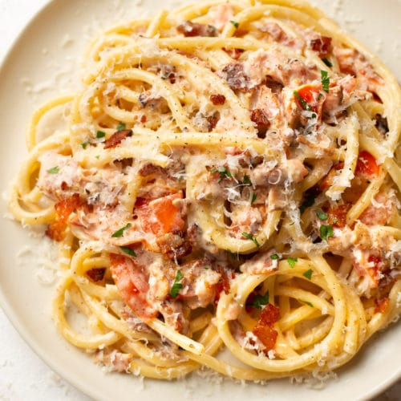

COOK IT UP!
Recipe 1: Pasta with Bacon and Tomato Sauce

Ingredients:
- Pasta
- Bacon
- Olive oil
- Onion, diced
- Garlic cloves, minced
- Canned diced tomatoes
- Tomato paste
- Dried oregano
- Dried basil
- Red pepper flakes (optional)
- Salt and pepper, to taste
- Grated Parmesan cheese
- Fresh basil leaves, for garnish
Instructions:
- Preheat the oven to 350°F (175°C). Grease and flour a cake pan.
- In a mixing bowl, combine the flour, sugar, baking powder, baking soda, and salt.
- Add the softened butter, milk, and vanilla extract to the dry ingredients. Mix until well combined.
- Add the eggs, one at a time, beating well after each addition.
- Pour the batter into the prepared cake pan.
- Bake for 30-35 minutes, or until a toothpick inserted into the center comes out clean.
- Remove the cake from the oven and let it cool in the pan for 10 minutes.
- Transfer the cake to a wire rack to cool completely before serving.
Recipe 2: Cake Recipe
Ingredients:
- 2 cups all-purpose flour
- 1 1/2 cups granulated sugar
- 1 teaspoon baking powder
- 1/2 teaspoon baking soda
- 1/2 teaspoon salt
- 1/2 cup unsalted butter, softened
- 1 cup milk
- 2 teaspoons vanilla extract
- 3 large eggs
Instructions:
- Preheat the oven to 350°F (175°C). Grease and flour a cake pan.
- In a mixing bowl, combine the flour, sugar, baking powder, baking soda, and salt.
- Add the softened butter, milk, and vanilla extract to the dry ingredients. Mix until well combined.
- Add the eggs, one at a time, beating well after each addition.
- Pour the batter into the prepared cake pan.
- Bake for 30-35 minutes, or until a toothpick inserted into the center comes out clean.
- Remove the cake from the oven and let it cool in the pan for 10 minutes.
- Transfer the cake to a wire rack to cool completely before serving.